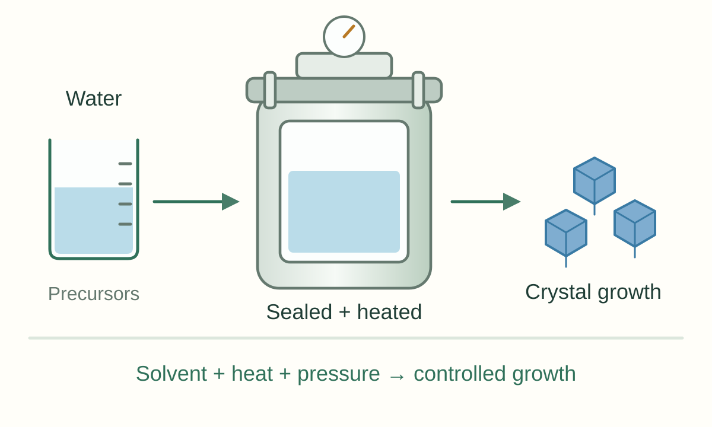

Hydrothermal synthesis
Water-based crystal growth

Principle
Precursors react in water inside a sealed, heated vessel. Elevated temperature and the resulting pressure change solubility and reaction kinetics, allowing nucleation and crystal growth. Temperature, pH, precursor concentration, and reaction time help select particle size, shape, and phase.
Outcome
Crystalline oxides, phosphors, and other water-compatible materials.
What controls the outcomeSolvent chemistry and pressure-vessel constraints determine whether this route suits a particular composition.
Read the scientific principle ↗